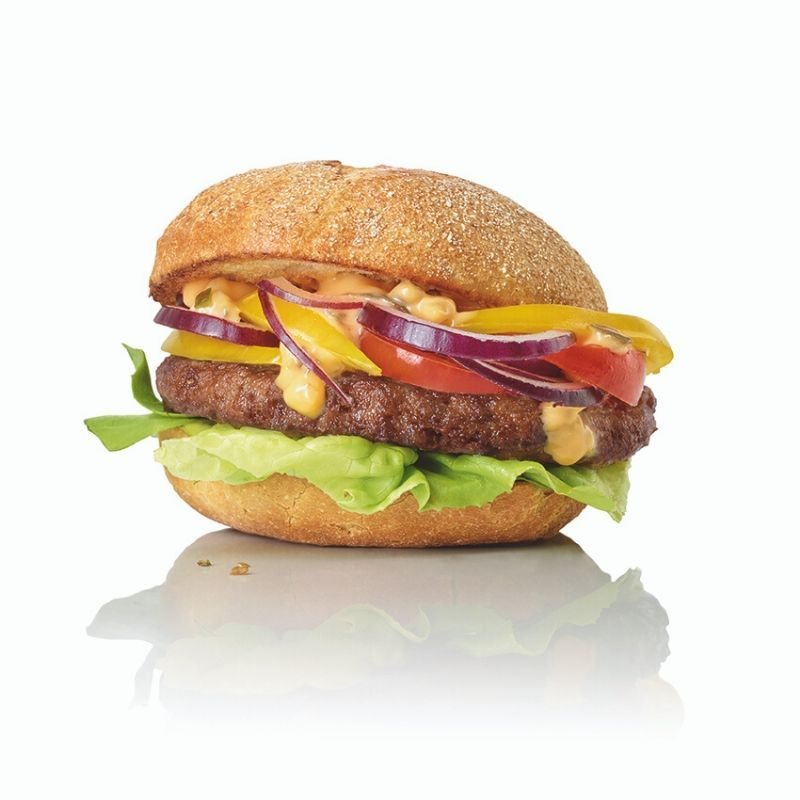

Hamburger

Recipe of a good Hamburger
Hamburger was popular back in the day and still is in America because of fast it can be made
Hamburger one of the favorites dishes in the world!
Ingredients
- Ground chuck – We prefer an 80 lean/20 fat ratio for the juiciest burgers.
- Crushed crackers or Panko bread crumbs – The best binders for juicy hamburgers. (Could be gluten-free!)
- Worcestershire sauce – Adds a deep beefy, smoky flavor.
- Egg – To bind all of the ingredients together without drying.
- Milk – The enzymes help to soften and tenderize the ground beef.
- Seasonings: Salt, Garlic Powder, Onion powder, Pepper, or other spices of choice.
Step by Step
- Preheat an outdoor grill for high heat and lightly oil grate
- Whisk together egg, salt, and pepper in a medium bowl.
Add ground beef and bread crumbs and mix with your hands or a fork until well blended.
Form into four 3/4-inch-thick patties.
- Place patties on the preheated grill. Cover and cook 6 to 8 minutes per side, or to desired doneness.
An instant-read thermometer inserted into the center should read at least 160 degrees F (70 degrees C).